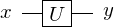
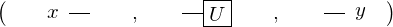

Expression of type ExprTuple¶
from the theory of proveit.physics.quantum¶
In [1]:
import proveit
# Automation is not needed when building an expression:
proveit.defaults.automation = False # This will speed things up.
proveit.defaults.inline_pngs = False # Makes files smaller.
%load_expr # Load the stored expression as 'stored_expr'
# import Expression classes needed to build the expression
from proveit import ExprArray, ExprTuple, U, x, y
from proveit.linear_algebra import MatrixProd
from proveit.logic import Equals
from proveit.physics.quantum import Gate, Input, Output
from proveit.physics.quantum.circuit import Circuit
In [2]:
# build up the expression from sub-expressions
expr = ExprTuple(Circuit(ExprArray([Input(x), Gate(U), Output(y)])), Equals(y, MatrixProd(U, x)))
Out[2]:
In [3]:
# check that the built expression is the same as the stored expression
assert expr == stored_expr
assert expr._style_id == stored_expr._style_id
print("Passed sanity check: expr matches stored_expr")
In [4]:
# Show the LaTeX representation of the expression for convenience if you need it.
print(expr.latex())
In [5]:
expr.style_options()
Out[5]:
In [6]:
# display the expression information
expr.expr_info()
Out[6]:
| core type | sub-expressions | expression | |
|---|---|---|---|
| 0 | ExprTuple | 1, 2 | |
| 1 | Operation | operator: 3 operand: 7 |  |
| 2 | Operation | operator: 5 operands: 6 |  |
| 3 | Literal |  | |
| 4 | ExprTuple | 7 | None |
| 5 | Literal |  | |
| 6 | ExprTuple | 23, 8 |  |
| 7 | ExprTuple | 9 | None |
| 8 | Operation | operator: 10 operands: 11 |  |
| 9 | ExprTuple | 12, 13, 14 |  |
| 10 | Literal |  | |
| 11 | ExprTuple | 22, 21 |  |
| 12 | Operation | operator: 15 operand: 21 |  |
| 13 | Operation | operator: 17 operand: 22 |  |
| 14 | Operation | operator: 19 operand: 23 |  |
| 15 | Literal |  | |
| 16 | ExprTuple | 21 |  |
| 17 | Literal |  | |
| 18 | ExprTuple | 22 |  |
| 19 | Literal |  | |
| 20 | ExprTuple | 23 |  |
| 21 | Variable |  | |
| 22 | Variable |  | |
| 23 | Variable |  |